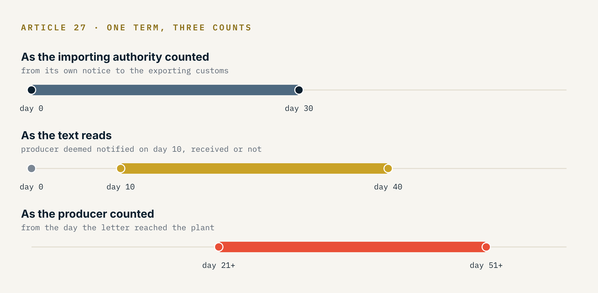
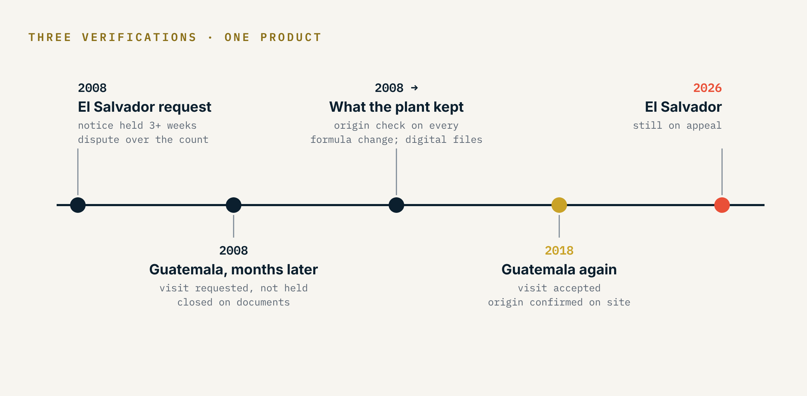

The two products were the same product. Same fat content, same tariff line, same tin on the same shelf. One was made in the plant from milk collected on local farms. The other arrived from outside the region already finished, and the plant only repacked it.
Side by side, nobody could tell them apart. That is close to the regulation's own wording: the Central American origin regulation defines fungible goods as goods that are interchangeable for commercial purposes, essentially identical, and impossible to tell apart by simple visual examination. It also lists repacking among the minimal operations that confer no origin, so the imported product stayed foreign all the way through the building and out the other door.
Two tins that told you nothing
The plant was a dairy manufacturer in a Central American country, shipping most of what it made to its neighbours under regional free trade. The local product carried its own complication. To bring the fat to specification and keep it uniform, the formula added a second dairy input, imported, which could come from Europe, the United States or Oceania depending on the month and the price.
The regional rule for the finished product required a change from any other chapter. The imported input sat in the same chapter as the good it went into, so it failed the rule every time it was used. The product was originating only because Article 11 forgives non-originating materials that fail the required change, up to ten percent of the transaction value. Unlike NAFTA, which carved dairy out of its tolerance, the regional regulation made no exception for Chapter 4.
So the plant was exporting a product whose origin rested on a percentage, made in the same building as an identical product with no claim to origin at all. When dairy producers in an importing country see a neighbour's plant that also handles imported product of the same description, the question more or less writes itself, and their chambers know how to put it to a ministry.
The clock started in someone else's office
The first request arrived in 2008, in my first year at the plant. I was twenty-four. It came from El Salvador, which was looking at more than a million dollars in duty the goods had not paid because they entered free under the regional customs form.
Article 27 of the regulation does not send the notice to the producer. It sends it to the competent authority of the exporting country, which has ten days to pass it on. When those ten days run out, the importing authority treats the producer as notified and carries on. The questionnaire must be answered within thirty days of notification, and the producer may ask once, in writing and within that term, for an extension of up to thirty more.
Our notice sat with our own customs administration for more than three weeks before it reached the plant. We requested the extension inside thirty days, counted from the day the letter arrived. El Salvador counted from the day it had notified our customs administration, and ruled the request out of time.

Neither side's count matches the text exactly, which is part of why the case lasted. What the text does settle is where the risk sits. The deemed-notification clause exists so that a slow exporting administration cannot freeze a verification, and the price of that design is paid by the producer, who carries the days its own customs office lets pass and has no way of watching them go.
We answered the questionnaire on paper and by fax. The supporting declarations were too many to send that way, so we burned them onto a CD. The dispute over the count went to the Supreme Court of Justice of El Salvador. It is still being appealed.
Four months later, Guatemala
The Guatemalan request came four or five months after the first, with about $1.2 million in scope, and this time nobody waited for the questionnaire to set the agenda. We retained an advisor who had worked the 2006 ice-cream origin dispute, the case that settled how de minimis is calculated in the region, and ran a preliminary determination of our own. On a sample product, we confirmed that it qualified under the tolerance.
Then came the slower part. To prepare for the audit we traced every non-originating input into the originating product, recipe by recipe, and that tracing turned into a set of formulas the plant kept using long after the file closed. We appointed a representative resident in Guatemala under a power of attorney. We met the Ministry of Economy and the auditors, and invited them to see the plant.
Under the regulation a verification visit is the importing authority's tool. The producer's part is to consent to it, within thirty days, or lose the preference. Asking for one is not something the procedure expects a producer to do. The visit did not happen. The verification closed on documents, and the goods were found originating.
What the plant kept
The formulas outlived the audit. From then on every change to a production formula went through an origin check before it was executed: which imported input, from where, at what price, and what that did to the ten percent. De minimis is a fraction of value, so a currency move or a supplier's price increase can push it toward the line without anyone on the floor touching a valve.
The files changed too. Answers that had gone out by fax became digital records, and once the office began running regular checkpoints, every origin file was kept that way. That same year the customs broker handling the account digitalized its own operation, and we were its first client on the electronic system.
The saying goes that success has many fathers and failure is an orphan. In trade compliance the orphan has a known address. When a verification goes badly nobody remembers approving the formula change, nobody knew where the imported input came from that quarter, and the duty lands on the importer. That is the practical argument for giving origin controls an owner who answers for them, and a routine that does the basic things every month whether or not a letter is on its way. Most of what carried us through the next verification was ordinary work done in the years before it.
Ten years later
In 2018 Guatemala opened another verification on the same product, with roughly $1.5 million in scope. The regulation requires the producer to keep its accounting, inventory and production records for five years from the date it signs the certification. Those five years were on file, already calculated. Nothing had to be rebuilt. Nobody had to reconstruct consumption or chase results after the fact.
We asked for the plant visit again, and this time it was accepted. The auditors walked the plant, watched a production run, and saw the formula they had read on paper being made in front of them. Origin was confirmed on site.

The product had not changed between the two, and neither had the arithmetic. What the auditors found the second time was ten years of records that existed because someone had been made responsible for keeping them.
The route that stayed in the drawer
There was another way to qualify. An input sourced from the United States is originating material under CAFTA-DR, and with accumulation across the Parties under Article 4.5 the finished product would have qualified without any de minimis calculation at all. We studied moving from the regional customs form to CAFTA-DR certification and never made the switch. The regional route had never come near ten percent, and changing instruments meant changing suppliers, paperwork, and the way the importers claimed the preference on their side. It stayed as a plan B, which is a reasonable place for a plan B to stay. The logic is the one in Accumulation Does Not Travel: what an agreement lets you count as yours depends on which agreement you are standing in.
Where it stands
Guatemala confirmed origin twice, once on documents and once on the plant floor. The Salvadoran case over a count of days is still in court, eighteen years after the letter sat in an office that was not ours.
- COMIECO-EX Resolution 156-2006 (7 June 2006), Reglamento Centroamericano sobre el Origen de las Mercancías: Art. 4 (definition of fungible goods), Art. 7(e) (repacking as a minimal operation), Art. 11 (de minimis), Art. 12 (fungible goods and inventory management methods), Art. 21.5 (record keeping), Art. 27 (verification procedure); Annex, specific rules of origin, Chapter 4.
- CAFTA-DR, Chapter Four (Rules of Origin and Origin Procedures), Article 4.5 (Accumulation) and Article 4.6 (De Minimis).
- NAFTA, Article 405(3)(a), exclusion of Chapter 4 dairy materials from de minimis (comparison).
- Guatemala v. Costa Rica, Central American Trade Dispute Settlement Mechanism, MSC-04-04, Final Resolution, 13 June 2006 (SIECA).